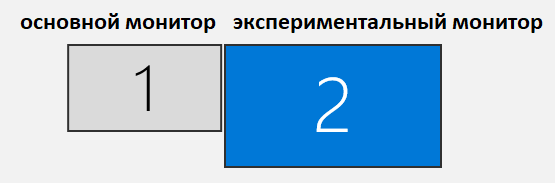

Приложение создано для автоматизации проведения когнитивно-поведенчесских экспериментов в Институте Физиологии имени Павлова.
Программа позволяет настраивать и проводить 3 эксперимента (перейдите по ссылке для подробной информации о каждом из них)
В этой вкладке настраивается звуковое подкрепление (звуки воспроизводящиеся при правильных и неправильных ответах, а также в начале эксперимент).
Также в этой вкладке можно настроить параметры курсора, появляющегося при нажатии на сенсорный экран (помогает в отслеживании нажатий на втором мониторе).
Можно настоить размеры копии второго монитора и цвет фона у окна эксперимента.
Настройка параметров каждого из экспериментов проводится во вкладке "Запуск эксперимента" после нажатия кнопки "Настроить эксперимент".
Для удобства настройки каждого из экспериментов можно сохранять в файл для повторного использования (кнопки "Экспортировать настройки" и "Импортировать настройки" в
окне "Настройки эксперимента").
В этой же вкладке предлагается обнулить глобальный таймер эксперимента (если эта опция не будет выбрана, то время будет отсчитываться не от начала текущего эксперимента, а от начала первого проведенного эксперимента в сессии)
Также можно ввести имя файла в который будет записаны результаты эксперимента (если файл не будет указан, то после завершения эксперимента появится окно повторно
запрашивающее имя файла для записи результатов).
Во вкладке "Проверка устройств" можно настроить порт по которому подключена управляющая плата и настроить частоту
этого порта.
Также можно проверить, работает ли захват второго монитора, а также реагирует ли управляющая плата на передачу сигналов, активирующих поилку, а также подъем/опускание заслонки блокирующей ввод ответа.
Для корректной работы экспериментальной установки основной и экспериментальный мониторы должны быть расположены следующим образом:
Основной экран должен быть под номером 2.
Автор проекта: Беляков Константин
Написать разработчику